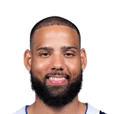

Jimmy Butler on Caleb Martin:
“I told Caleb he should start in my place if he gonna guard like that... If he talk to Spo, I think Spo may start him over me.”

10 quotes about Caleb Martin from 10 players, coaches and executives, newest first. Each one links to its original source.
Jimmy Butler on Caleb Martin:
“I told Caleb he should start in my place if he gonna guard like that... If he talk to Spo, I think Spo may start him over me.”
But as the Heat gets healthier and begins to get players back from injury, Jovic is self aware enough to realize he may again find himself out of the rotation soon.
“We have one of the best players in the league in Jimmy [Butler], one of the best backups in Caleb [Martin],”
Brady Hawk:Bam Adebayo on Caleb Martin in the new role:
“For me, Caleb has been the bright spot on our team. Through the ups and downs, he’s always been consistent.”
What Caleb Martin has said about other players and coaches →
Daryl Morey on Martin, via press release:
“Caleb is a battle-tested performer who has elevated his game when his teams have needed it most. We’re excited for him to bring his skillset and mentality to the 76ers.”
Jared Weiss:Jaylen Brown on the Caleb Martin hit on Jayson Tatum:
“I just told him to watch that…We know they like to play hard and be physical, but there’s a line.”
Jared Weiss:Payton Pritchard on Caleb Martin’s hit on Jayson Tatum:
“I think we like that. I think that was a joy to watch.”
But as the Heat gets healthier and begins to get players back from injury, Jovic is self aware enough to realize he may again find himself out of the rotation soon.
“We have one of the best players in the league in Jimmy [Butler], one of the best backups in Caleb [Martin],”
However, he argued that Martin’s consistent performance across the board deserved recognition.
“If I had a vote, I personally was voting for Caleb Martin for MVP,”
Harrison Wind:Michael Malone:
“Caleb Martin could have easily won MVP of the Eastern Conference Championship.”
Brady Hawk:Bam Adebayo on Caleb Martin in the new role:
“For me, Caleb has been the bright spot on our team. Through the ups and downs, he’s always been consistent.”
Erik Spoelstra on Caleb Martin (calf):
“We literally are protecting him from himself. He's demanding to get back to play out there, and we just want to make sure that when he does come back, that it's not just for one game and it's sore.”
Jimmy Butler on Caleb Martin:
“I told Caleb he should start in my place if he gonna guard like that... If he talk to Spo, I think Spo may start him over me.”
Hornets coachJames Borrego on Caleb Martin:
“I’m not surprised Miami picked him up. I think he fits a lot of the culture and the pieces that Miami looks for. He carries and plays hard. He brings it every day.”